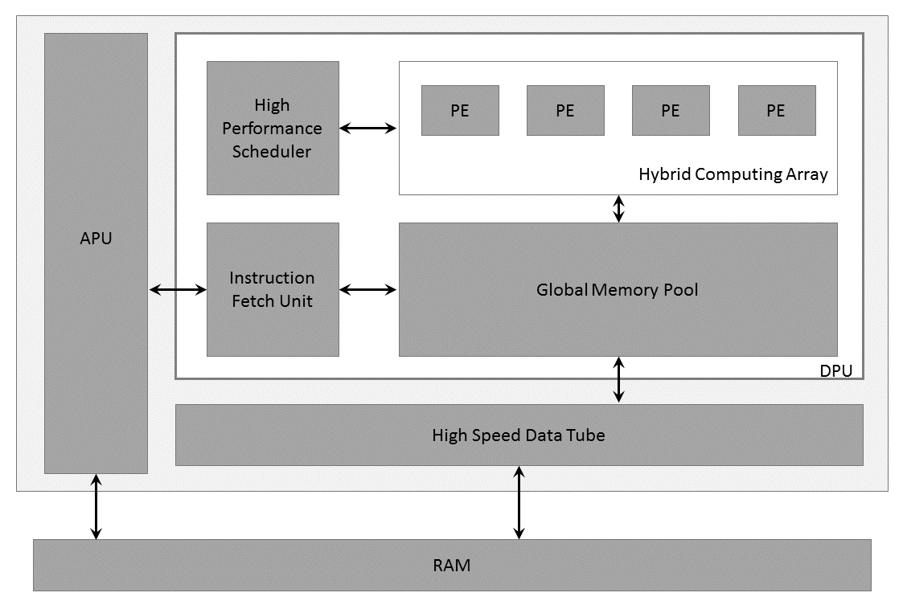

AI Customization¶
AI inference capability can be brought in by leverage the Vitis AI development stack, which provides optimized IP, tools, libraries, models, and example designs. In this topic we will introduce how to use Xilinx model set and build your own model demo.
DPU IP Introduction¶
DPU (Deep Learning processor) is a programmable engine optimized for deep neural networks. It is a group of parameterizable IP cores pre-implemented on the hardware with no place and route required. The DPU is released with the Vitis AI specialized instruction set, allowing for efficient implementation of many deep learning networks.
The DPU IP can be implemented in the programmable logic (PL) of the selected Zynq®-7000 SoC or Zynq® UltraScale+™ MPSoC device with direct connections to the processing system (PS). The DPU requires instructions to implement a neural network and accessible memory locations for input images as well as temporary and output data. A program running on the application processing unit (APU) is also required to service interrupts and coordinate data transfers.
The following figure shows the DPU Top-Level Block Diagram. 
DPU Top-level Block Diagram
PE:Processing Engine, DPU:Deep Learning Processor Unit, APU:Application Processing Unit
Vitis AI Model¶
The Vitis™ AI development environment accelerates AI inference on AMD® hardware platforms, including both edge devices and Alveo™ accelerator cards. It consists of optimized IP cores, tools, libraries, models, and example designs. It is designed with high efficiency and ease of use in mind to unleash the full potential of AI acceleration on AMD FPGAs and on adaptive compute acceleration platforms (ACAPs). The Vitis AI development environment makes it easy for users without FPGA knowledge to develop deep-learning inference applications by abstracting the intricacies of the underlying FPGA and ACAP.
Machine Learning and Data Science:
Importing a machine learning model from a Caffe, Pytorch, TensorFlow, or other popular framework onto Vitis™ AI, and then optimizing and evaluating its effectiveness.Setup the environment of the Cloud or Edge. The Vitis AI contains various samples for demonstration.
Quantizing the Model. Quantization and channel pruning techniques are employed to address these issues while achieving high performance and high energy efficiency with little degradation in accuracy. The Vitis AI develop kit has the quantization and channel pruning tool.
Compiling the Model. The Compiler generates the compiled model based on the DPU microarchitecture. Vitis AI supports several DPUs for different platforms and applications.
Host Software Development:
Developing the application code, accelerator development, including library, XRT, and Graph API use. Deploy the model on the target and run the model.Hardware, IP, and Platform Development:
Creating the PL IP blocks for the hardware platform, creating PL kernels, functional simulation, and evaluating the Vivado®timing, resource use, and power closure. Also involves developing the hardware platform for system integration.System Integration and Validation:
Integrating and validating the system functional performance, including timing, resource use, and power closure.
Refer to UG1414 to know more details on Vitis AI development kit.
AI model customization for Kria SOM applications¶
Model Preparation¶
Users can customize their own models for the DPU instance integrated into the platform.
As above, the Vitis AI Model Zoo has already provided some ready-to-use models for Vitis AI Library API.
If the model has been trained to an existing Kria example app DPU instance (e.g. DPU3136) then the resulting models can be copied to the Kria Linux file system and used on an existing platform
Note Make sure the Vitis AI version of app and models.
Note As described in the Hardware Accelerator section, the DPU integrated in the different platform uses different configuration such as B3136 etc.
The arch.json used to compile the xmodel for DPU can be obtained by build the accelerator, but if you won’t build all from the start, you can save following code as arch.json
{
"fingerprint":"0x1000020F6014406"
}
Configuration files¶
To integrate a different .xmodel into the SmartCam application, the following configuration files must be updated accordingly:
AI Inference Config:
Take the refinedet aiinference.json
/opt/xilinx/kv260-smartcam/share/vvas/refinedet/aiinference.jsonas an example,
{
"vvas-library-repo": "/usr/lib/",
"element-mode":"inplace",
"kernels" :[
{
"library-name":"libvvas_xdpuinfer.so",
"config": {
"model-name" : "refinedet_pruned_0_96",
"model-class" : "REFINEDET",
"model-path" : "/opt/xilinx/kv260-smartcam/share/vitis_ai_library/models",
"run_time_model" : false,
"need_preprocess" : false,
"performance_test" : false,
"debug_level" : 0
}
}
]
}
You can change the “model-name” and “model-path” fields to use the customized xmdel file at ${model-path}/${model-name}/${model-name}.xmodel.
Pay attention to the field “need_preprocess”, which is now “false”, tells Vitis AI Library the input buffer is already the resized and quantized BGR image as required by the model. And the preprocess is done by the preprocess plugin with the proper configuration which will be detailed in next section.
When you set the “need_preprocess” here to “true” for some reason, you should also make change to the process configuration to ask the preprocess IP works just as colour conversion and resizing.
Preprocess Config:
"config": {
"debug_level" : 1,
"mean_r": 123,
"mean_g": 117,
"mean_b": 104,
"scale_r": 1,
"scale_g": 1,
"scale_b": 1
}
The configuration value of mean/scale for r/g/b channels should be the same as the ones specified in Vitis AI Model prototxt file. For example, following is taken from /opt/xilinx/share/kv260-smartcam/vvas/refinedet/preprocess.json.
model {
name : "refinedet_480x360_5G"
kernel {
name: "refinedet_480x360_5G"
mean: 104.0
mean: 117.0
mean: 123.0
scale: 1.0
scale: 1.0
scale: 1.0
}
}
Notice the channels sequence in the Vitis AI model prototxt file is B, G, R, not R, G, B, as the above samples show.
Example¶
Take Vitis AI model ssd_mobilenet_v2 as example, we provide the detailed steps to add an AI task for smartcam application.
Create folder
ssd_mobilenet_v2under/opt/xilinx/kv260-smartcam/share/vvas/, so thatssd_mobilenet_v2can be used as the value for argument –AItask.Download model file for GPU from the link provided by https://github.com/Xilinx/Vitis-AI/blob/master/models/AI-Model-Zoo/model-list/cf_ssdmobilenetv2_bdd_360_480_6.57G_1.4/model.yaml
After extraction, we get such file structure:
├── README.md ├── code │ ├── gen_data │ │ └── gen_quantize_data_list.py │ ├── test │ │ ├── demo.sh │ │ ├── demo_list.txt │ │ ├── demo_quantized.sh │ │ ├── evaluation.py │ │ ├── gt_labels.txt │ │ ├── images.txt │ │ ├── quantize.sh │ │ └── result.txt │ └── train │ ├── solver.prototxt │ └── trainval.sh ├── data │ ├── convert_jsonTotxt.py │ └── data_preprocess.sh ├── float │ ├── quantize.prototxt │ ├── test.prototxt │ ├── trainval.caffemodel │ └── trainval.prototxt ├── labelmap_voc.prototxt └── quantized ├── deploy.caffemodel ├── deploy.prototxt ├── quantized_test.prototxt ├── quantized_train_test.caffemodel └── quantized_train_test.prototPrepare ssd_mobilenet_v2 Model
ssd_mobilenet_v2.xmodelfor DPU 3136 and put generated xmodel files together with the prototxt file to:/opt/xilinx/kv260-smartcam/share/vitis_ai_library/models/ssd_mobilenet_v2/ssd_mobilenet_v2.prototxtopt └── xilinx └── kv260-smartcam └── share └── vitis_ai_library └── models └── ssd_mobilenet_v2 ├── ssd_mobilenet_v2.prototxt └── ssd_mobilenet_v2.xmodelCreate configuration files for ssd_mobilenet_v2.
preprocess.json
The mean and scale of B, G, R channel is taken from the deploy.protxt of the model.
layer { name: "data" type: "Input" top: "data" transform_param { mean_value: 104 mean_value: 117 mean_value: 123 resize_param { prob: 1 resize_mode: WARP height: 360 width: 480 interp_mode: LINEAR } } input_param { shape { dim: 1 dim: 3 dim: 360 dim: 480 } } }{ "xclbin-location":"/lib/firmware/xilinx/kv260-smartcam/kv260-smartcam.xclbin", "vvas-library-repo": "/opt/xilinx/kv260-smartcam/lib", "kernels": [ { "kernel-name": "pp_pipeline_accel:pp_pipeline_accel_1", "library-name": "libvvas_xpp.so", "config": { "debug_level" : 0, "mean_r": 123, "mean_g": 117, "mean_b": 104, "scale_r": 1, "scale_g": 1, "scale_b": 1 } } ] }
aiinference.json:
{ "xclbin-location":"/lib/firmware/xilinx/kv260-smartcam/kv260-smartcam.xclbin", "vvas-library-repo": "/usr/lib/", "element-mode":"inplace", "kernels" :[ { "library-name":"libvvas_xdpuinfer.so", "config": { "model-name" : "ssd_mobilenet_v2", "model-class" : "SSD", "model-path" : "/opt/xilinx/kv260-smartcam/share/vitis_ai_library/models", "run_time_model" : false, "need_preprocess" : false, "performance_test" : false, "debug_level" : 0 } } ] }
lable.json:
SSD model privdes predictation of multiple classes in file
labelmap_voc.prototxt.item { name: "none_of_the_above" label: 0 display_name: "background" } item { name: "person" label: 1 display_name: "person" } item { name: "rider" label: 2 display_name: "rider" } item { name: "car" label: 3 display_name: "car" } item { name: "truck" label: 4 display_name: "truck" } item { name: "bus" label: 5 display_name: "bus" } item { name: "train" label: 6 display_name: "train" } item { name: "motor" label: 7 display_name: "motor" } item { name: "bike" label: 8 display_name: "bike" } item { name: "sign" label: 9 display_name: "sign" } item { name: "light" label: 10 display_name: "light" }
We need to convert the above lable info to json file as requested by VVAS framework as bellow.
{ "model-name":"ssd_mobilenet_v2", "num-labels": 11, "labels": [ { "label": 0, "name": "background", "display_name": "background" }, { "label": 1, "name": "person", "display_name": "person" }, { "label": 2, "name": "rider", "display_name": "rider" }, { "label": 3, "name": "car", "display_name": "car" }, { "label": 4, "name": "truck", "display_name": "tr" }, { "label": 5, "name": "bus", "display_name": "bus" }, { "label": 6, "name": "train", "display_name": "train" }, { "label": 7, "name": "motor", "display_name": "motor" }, { "label": 8, "name": "bike", "display_name": "bike" }, { "label": 9, "name": "sign", "display_name": "sign" }, { "label": 10, "name": "light", "display_name": "light" } ] }
drawresult.json
Here we pick up 3 classes to be shown: car, person, bicycle; and also customize the color for each class as bellow.
{ "xclbin-location":"/usr/lib/dpu.xclbin", "vvas-library-repo": "/opt/xilinx/kv260-smartcam/lib", "element-mode":"inplace", "kernels" :[ { "library-name":"libvvas_airender.so", "config": { "fps_interval" : 10, "font_size" : 2, "font" : 3, "thickness" : 2, "debug_level" : 0, "label_color" : { "blue" : 0, "green" : 0, "red" : 255 }, "label_filter" : [ "class", "probability" ], "classes" : [ { "name" : "car", "blue" : 255, "green" : 0, "red" : 0 }, { "name" : "person", "blue" : 0, "green" : 255, "red" : 0 }, { "name" : "bicycle", "blue" : 0, "green" : 0, "red" : 255 }] } } ] }
License¶
Licensed under the Apache License, Version 2.0 (the “License”); you may not use this file except in compliance with the License.
You may obtain a copy of the License at http://www.apache.org/licenses/LICENSE-2.0
Unless required by applicable law or agreed to in writing, software distributed under the License is distributed on an “AS IS” BASIS, WITHOUT WARRANTIES OR CONDITIONS OF ANY KIND, either express or implied. See the License for the specific language governing permissions and limitations under the License.
Copyright© 2023 Advanced Micro Devices, Inc